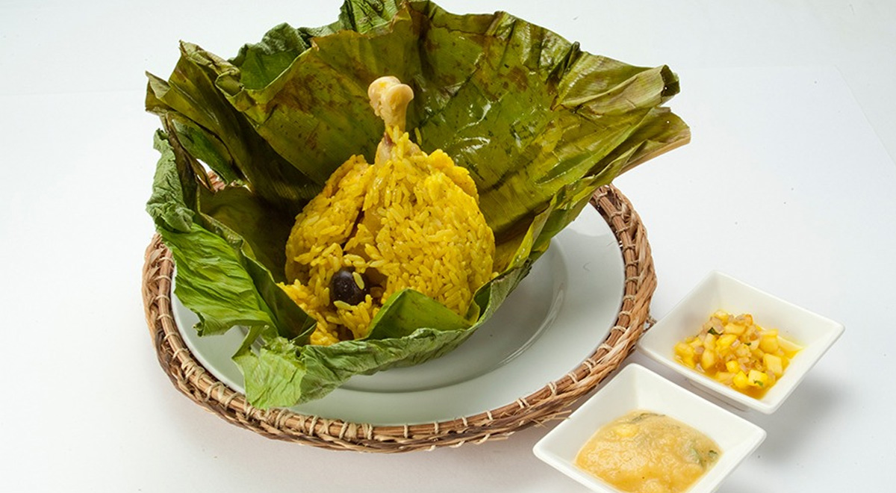
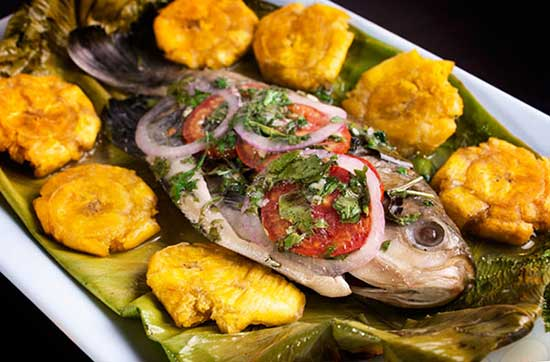
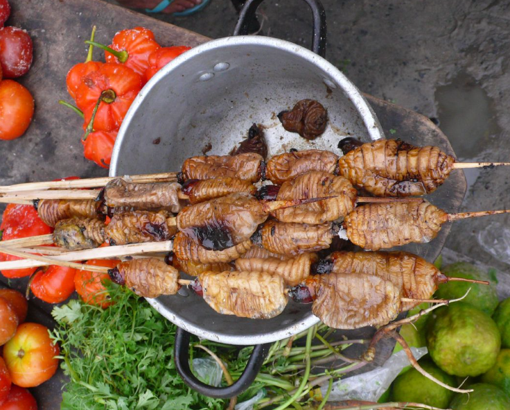
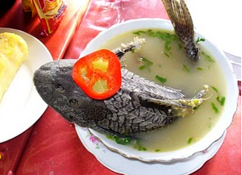
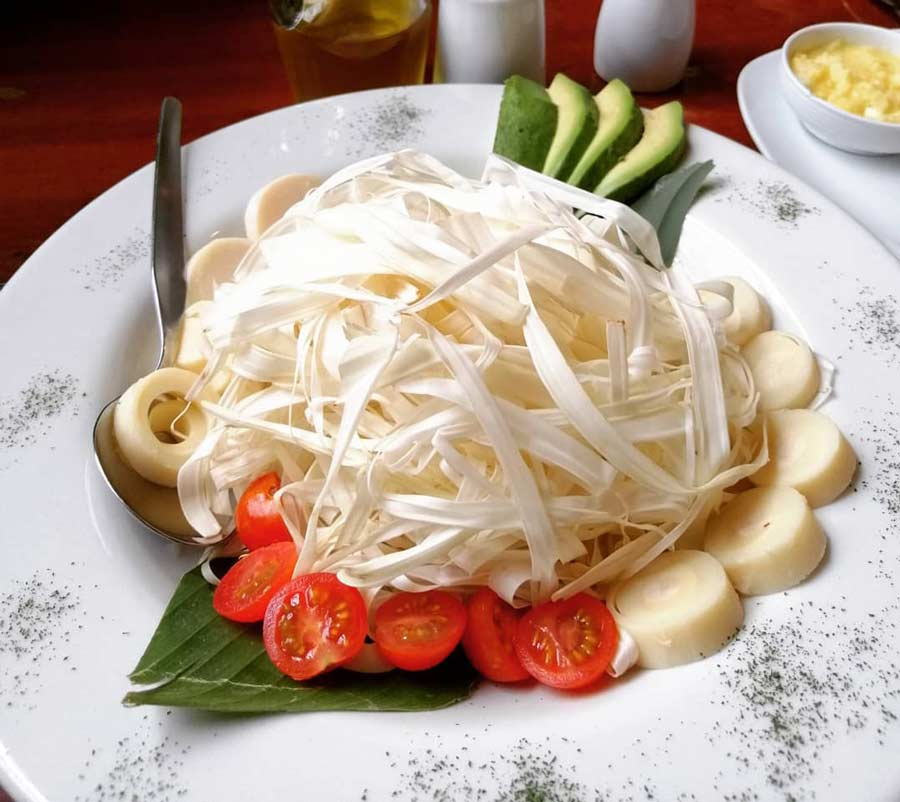
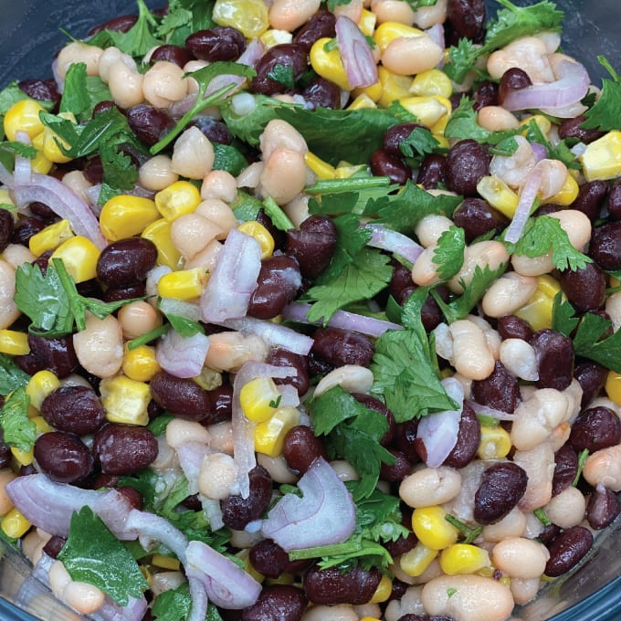
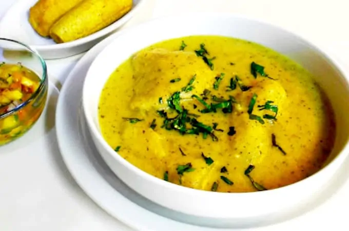

Los platos típicos de la selva Peruana son diversas y deliciosas. Se distingue por la forma como preparan los platos, lo hacen de forma tradicional, hacen uso de sus frutas (plátano y coco), carnes (chancho, sachavaca, gallina) y roedores (sachacuy) y pescados (paiche y trucha).
La gastronomía peruana se caracteriza por tener un sabor especial y una variedad infinita que se puede disfrutar en cada rincón del país, producto de la influencia de diversas culturas, así como del uso de insumos típicos de la zona.
La Cocina amazónica, considerada una de las más exquisitas del mundo por el uso indiscutible de sus ingredientes, sabores y texturas, elementos que estimulan los sentidos y despiertan sensaciones inigualables.
A continuación, conozca cuáles son los platos típicos de la selva con sus nombres más representativos que ofrece la selva peruana:
Juane

El Juane es uno de los platos típicos de la selva, es el más representativo, plato de Moyobamba que se asemeja a un tamal muy grande a base de arroz, pollo o pollo y huevo. Donde el arroz cubre como si fuera una manta a la gallina ya sazonada y al huevo en trozos.
Tiene variaciones en cada región de la selva, pero podemos encontrar en 2 presentaciones, Juane con Yuca o Juane de Gallina.
Patarashca

Si eres amante de los pescados, este plato te encantará.
La Patarashca tiene una forma de prepararlo que es diferente, ya que el pescado de río se vende condimentado con especias típicas de la selva peruana envuelto en una hoja y asado en carbón. Esta combinación hace que el pescado tenga un delicioso aroma y sabor.
Brochetas de suri

El suri es un gusano que se reproduce en el tallo del aguaje y del palmito, tiene un agradable sabor similar al del pollo, para este plato sólo se fríe el suri y se acompaña con plátanos asados o yucas sancochadas. Una excelente combinación.
Este plato es el más raro de la cocina de selva peruana, pero es mundialmente conocido, por está razón muchos turistas vienen a probarla.
Timbuche

Sopa de pescado frito, en esta ocasión los protagonistas son las diversas especies de pescado que existen en el Amazonas, a las que se añaden huevos y cilantro, esta sopa tiene como principal peculiaridad que restaura a las personas que han tenido mucho esfuerzo físico y mental.
Dentro de platos típicos de la region selva, estás es la más local, y no es enfocado en turistas.
Ensalada de chonta

Comida autóctona de la Amazonía peruana, este plato fresco se consume sobre todo en la región de San Martín, ya que es costumbre disfrutarlo en los días de Pascua.
Su principal ingrediente es la chonta, una palmera de la que se extrae su interior, denominada por los nativos como el corazón de la chonta.
Otros pueden utilizar otras plantas como el cocotero, el jusará, el acaí y el pijuayo.
Para prepararlo se corta la chonta en trozos pequeños, se lava dos o tres veces, ya que tiene un olor fuerte, se la mezcla con tomate y más verduras a gusto de la persona y finalmente se le añade limón al gusto.
Esté es un plato exótico de la selva del Per.
Purtumute

El Purtumute consiste en un guiso cuyo ingrediente base son los frijoles, tanto blancos como negros, que se sazonan con mota y cilantro.
Algunas recetas también añaden maíz o incluso piñones, aunque estos ingredientes son opcionales.
Inchicapi de gallina

El Inchicapi de gallina con mani es una sopa amazónica, tiene como ingrediente peculiar la gallina criada en corral (gallina doméstica), maní licuado o molido, maíz, yuca y cilantro.
Es una sopa que no puedes encontrarlo en otro lado del mundo que vale la pena disfrutar y probarlo.